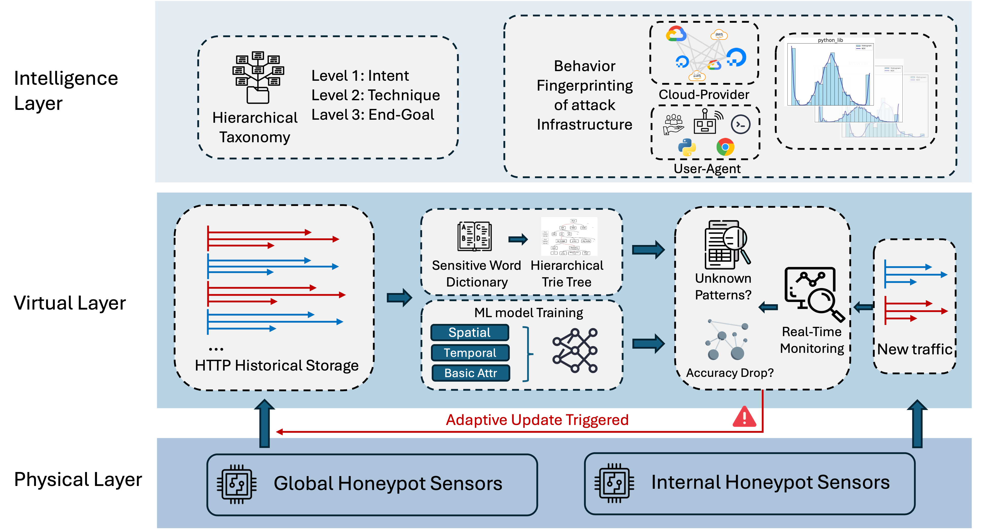

Yuanyuan Zhou, Anna Maria Mandalari (University College London)
Ryu Kuki, Takayuki Sasaki, Katsunari Yoshioka (Yokohama National University)
Last updated: June 2025
The proliferation of Internet of Things (IoT) devices introduces new vectors for cyberattacks, threatening the privacy, security, and resilience of modern networks. We propose TwinGuard, an adaptive digital twin system designed for real-time HTTP(S) intrusion detection. By integrating behavioral analytics, federated learning, and active threat simulations, TwinGuard offers a robust framework to identify evolving attack patterns while preserving user privacy. Our system’s effectiveness is validated across multiple IoT platforms, demonstrating significant improvements in detection accuracy and adaptive response.
Paper title: Adaptive Digital Twin for Real-Time HTTP(S) Intrusion Detection
Authors: Yuanyuan Zhou (UCL), Anna Maria Mandalari (UCL), Ryu Kuki (YNU), Takayuki Sasaki(YNU), Katsunari Yoshioka(YNU)
Full Text (PDF): pre-print available
Code: available on GitHub
Presentation at RIPE 90
waiting for publication